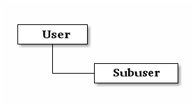

管理指南¶
Once you have your Ceph Object Storage service up and running, you may administer the service with user management, access controls, quotas and usage tracking among other features.
用户管理¶
Ceph Object Storage user management refers to users of the Ceph Object Storage service (i.e., not the Ceph Object Gateway as a user of the Ceph Storage Cluster). You must create a user, access key and secret to enable end users to interact with Ceph Object Gateway services.
There are two user types:
- User: The term ‘user’ reflects a user of the S3 interface.
- Subuser: The term ‘subuser’ reflects a user of the Swift interface. A subuser is associated to a user .

You can create, modify, view, suspend and remove users and subusers. In addition to user and subuser IDs, you may add a display name and an email address for a user. You can specify a key and secret, or generate a key and secret automatically. When generating or specifying keys, note that user IDs correspond to an S3 key type and subuser IDs correspond to a swift key type. Swift keys also have access levels of read, write, readwrite and full.
创建用户¶
To create a user (S3 interface), execute the following:
radosgw-admin user create --uid={username} --display-name="{display-name}" [--email={email}]
For example:
radosgw-admin user create --uid=johndoe --display-name="John Doe" --email=john@example.com
{ "user_id": "johndoe",
"display_name": "John Doe",
"email": "john@example.com",
"suspended": 0,
"max_buckets": 1000,
"auid": 0,
"subusers": [],
"keys": [
{ "user": "johndoe",
"access_key": "11BS02LGFB6AL6H1ADMW",
"secret_key": "vzCEkuryfn060dfee4fgQPqFrncKEIkh3ZcdOANY"}],
"swift_keys": [],
"caps": [],
"op_mask": "read, write, delete",
"default_placement": "",
"placement_tags": [],
"bucket_quota": { "enabled": false,
"max_size_kb": -1,
"max_objects": -1},
"user_quota": { "enabled": false,
"max_size_kb": -1,
"max_objects": -1},
"temp_url_keys": []}
Creating a user also creates an access_key and secret_key entry for use with any S3 API-compatible client.
Important
Check the key output. Sometimes radosgw-admin generates a JSON escape (\) character, and some clients do not know how to handle JSON escape characters. Remedies include removing the JSON escape character (\), encapsulating the string in quotes, regenerating the key and ensuring that it does not have a JSON escape character or specify the key and secret manually.
创建子用户¶
要创建用户的子用户（ Swift 接口），必须指定用户 ID （ --uid={username} ）、子用户 ID 和这个子用户的访问级别。
radosgw-admin subuser create --uid={uid} --subuser={uid} --access=[ read | write | readwrite | full ]
例如：
radosgw-admin subuser create --uid=johndoe --subuser=johndoe:swift --access=full
Note
full 不等于 readwrite ，因为它还包括访问控制策略。
{ "user_id": "johndoe",
"display_name": "John Doe",
"email": "john@example.com",
"suspended": 0,
"max_buckets": 1000,
"auid": 0,
"subusers": [
{ "id": "johndoe:swift",
"permissions": "full-control"}],
"keys": [
{ "user": "johndoe",
"access_key": "11BS02LGFB6AL6H1ADMW",
"secret_key": "vzCEkuryfn060dfee4fgQPqFrncKEIkh3ZcdOANY"}],
"swift_keys": [],
"caps": [],
"op_mask": "read, write, delete",
"default_placement": "",
"placement_tags": [],
"bucket_quota": { "enabled": false,
"max_size_kb": -1,
"max_objects": -1},
"user_quota": { "enabled": false,
"max_size_kb": -1,
"max_objects": -1},
"temp_url_keys": []}
修改用户信息¶
To modify information about a user, you must specify the user ID (--uid={username}) and the attributes you want to modify. Typical modifications are to keys and secrets, email addresses, display names and access levels. For example:
radosgw-admin user modify --uid=johndoe --display-name="John E. Doe"
To modify subuser values, specify subuser modify and the subuser ID. For example:
radosgw-admin subuser modify --uid=johndoe:swift --access=full
用户的暂停、启用¶
When you create a user, the user is enabled by default. However, you may suspend user privileges and re-enable them at a later time. To suspend a user, specify user suspend and the user ID.
radosgw-admin user suspend --uid=johndoe
To re-enable a suspended user, specify user enable and the user ID.
radosgw-admin user enable --uid=johndoe
Note
Disabling the user disables the subuser.
删除用户¶
删除用户时，这个用户以及他的子用户都会被删除。当然，如果你愿意，可以只删除子用户。要删除用户（及其子用户），可指定 user rm 和用户 ID ：
radosgw-admin user rm --uid=johndoe
只想删除子用户时，可指定 subuser rm 和子用户 ID 。
radosgw-admin subuser rm --subuser=johndoe:swift
其它可选操作：
- 清除数据： 加 --purge-data 选项可清除与此 UID 相关的所有数据。
- 清除密钥： 加 --purge-keys 选项可清除与此 UID 相关的所有密钥。
删除子用户¶
你删除子用户的同时，也失去了 Swift 接口的访问方式，但是这个用户还在系统中存在。要删除子用户，可指定 subuser rm 及子用户 ID ：
radosgw-admin subuser rm --subuser=johndoe:swift
其它可选操作：
- 清除密钥： 加 --purge-keys 选项可清除与此 UID 相关的所有密钥。
增加、删除密钥¶
用户和子用户都必须有密钥才能访问 S3 或 Swift 接口。用 S3 访问时，用户需要一个由访问密钥和私钥组成的密钥对；而用 Swift 访问时，通常只需要一个私钥（密码），并且要和相关的用户 ID 一起用才行。你可以创建密钥，并指定或生成访问密钥和/或私钥；也可以删除密钥。相关选项有：
- --key-type=<type> 指定密钥类型，选项有： s3 、 swift ；
- --access-key=<key> 手动指定 S3 的访问密钥；
- --secret-key=<key> 手动指定 S3 私钥或者 Swift 私钥；
- --gen-access-key 自动生成 S3 访问密钥；
- --gen-secret 自动生成一个 S3 私钥或 Swift 私钥。
给用户人为指定 S3 密钥对的实例如下：
radosgw-admin key create --uid=foo --key-type=s3 --access-key fooAccessKey --secret-key fooSecretKey
{ "user_id": "foo",
"rados_uid": 0,
"display_name": "foo",
"email": "foo@example.com",
"suspended": 0,
"keys": [
{ "user": "foo",
"access_key": "fooAccessKey",
"secret_key": "fooSecretKey"}],
}
请注意，你可以给一个用户创建多个 S3 密钥对。
给一个子用户配置指定的 swift 私钥：
radosgw-admin key create --subuser=foo:bar --key-type=swift --secret-key barSecret
{ "user_id": "foo",
"rados_uid": 0,
"display_name": "foo",
"email": "foo@example.com",
"suspended": 0,
"subusers": [
{ "id": "foo:bar",
"permissions": "full-control"}],
"swift_keys": [
{ "user": "foo:bar",
"secret_key": "asfghjghghmgm"}]}
请注意，一个子用户只能有一个 swift 私钥。
如果将子用户与 S3 密钥对关联，那么这些子用户也能用于 S3 API:
radosgw-admin key create --subuser=foo:bar --key-type=s3 --access-key barAccessKey --secret-key barSecretKey
{ "user_id": "foo",
"rados_uid": 0,
"display_name": "foo",
"email": "foo@example.com",
"suspended": 0,
"subusers": [
{ "id": "foo:bar",
"permissions": "full-control"}],
"keys": [
{ "user": "foo:bar",
"access_key": "barAccessKey",
"secret_key": "barSecretKey"}],
}
要删除一个 S3 密钥对，需指定访问密钥。
radosgw-admin key rm --uid=foo --key-type=s3 --access-key=fooAccessKey
删除 swift 私钥。
radosgw-admin key rm -subuser=foo:bar --key-type=swift
增加、删除管理能力¶
Ceph 存储集群提供了一个管理 API ，用户可以通过 REST API 使用管理功能。默认情况下，用户无权访问这个 API ，给用户分配管理能力后，他才能使用管理功能。
要给用户分配管理能力，执行下面的：
radosgw-admin caps add --uid={uid} --caps={caps}
你可以给 users 、 buckets 、 metadata 和 usage （利用率）分配 read 、 write 或 all 能力，例如：
--caps="[users|buckets|metadata|usage|zone]=[*|read|write|read, write]"
例如：
radosgw-admin caps add --uid=johndoe --caps="users=*;buckets=*"
要删除某用户的管理能力，可用下面的命令：
radosgw-admin caps rm --uid=johndoe --caps={caps}
配额管理¶
Ceph 对象网关允许你给用户及其拥有的桶设置配额，可设置的配额有桶内的最大对象数、和桶可以存储的最大数据尺寸。
- 桶： 加 --bucket 选项说明配额操作作用于用户拥有的桶。
- 最大对象数： --max-objects 选项用于指定最大对象数，负值表示禁用此配置。
- 最大尺寸： --max-size 选项用于指定配额尺寸，单位是 B/K/M/G/T ，默认值为 B 。负值表示禁用此配置。
- 配额作用域： --quota-scope 参数可指定配额的作用域，可选的有 bucket 和 user 。桶配额作用于用户拥有的桶；用户配额作用于用户。
设置用户配额¶
启用配额前，必须先配置配额参数。例如：
radosgw-admin quota set --quota-scope=user --uid=<uid> [--max-objects=<num objects>] [--max-size=<max size>]
例如：
radosgw-admin quota set --quota-scope=user --uid=johndoe --max-objects=1024 --max-size=1024B
对象数和、或最大尺寸为负值时，表示不再检查这种配额属性。
启用或禁用用户配额¶
设置好用户配额后就可以启用了。例如：
radosgw-admin quota enable --quota-scope=user --uid=<uid>
你也可以关闭已启用的用户配额功能。例如：
radosgw-admin quota disable --quota-scope=user --uid=<uid>
设置桶配额¶
Bucket quotas apply to the buckets owned by the specified uid. They are independent of the user.
radosgw-admin quota set --uid=<uid> --quota-scope=bucket [--max-objects=<num objects>] [--max-size=<max size]
A negative value for num objects and / or max size means that the specific quota attribute check is disabled.
启用、禁用桶配额¶
设置好桶配额后，你可以这样启用：
radosgw-admin quota enable --quota-scope=bucket --uid=<uid>
已启用的桶配额可禁用。例如：
radosgw-admin quota disable --quota-scope=bucket --uid=<uid>
查看配额配置信息¶
You may access each user’s quota settings via the user information API. To read user quota setting information with the CLI interface, execute the following:
radosgw-admin user info --uid=<uid>
更新配额统计信息¶
Quota stats get updated asynchronously. You can update quota statistics for all users and all buckets manually to retrieve the latest quota stats.
radosgw-admin user stats --uid=<uid> --sync-stats
查看用户使用情况的统计信息¶
查看用户已经消耗了多少配额可以用下列命令：
radosgw-admin user stats --uid=<uid>
Note
你可以用 radosgw-admin user stats 命令，加上 --sync-stats 选项来获取最新数据。
默认配额¶
你可以在配置文件里设置默认配额，新增用户会采用这些默认值，而已经存在的用户不受影响。如果相关的默认配额是写在配置文件里的，那么这些配额会分配给新用户，并对其启用配额管理功能。请参考 Ceph 对象网关配置参考里的 rgw bucket default quota max objects 、 rgw bucket default quota max size 、 rgw user default quota max objects 和 rgw user default quota max size 。
读取、写入全局配额¶
你可以在 period 配置中读取或写入全局配额设置，查看全局配额配置可以用：
radosgw-admin global quota get
全局配额选项可以用 global quota 系列命令修改，如 quota set 、 quota enable 和 quota disable 命令。
radosgw-admin global quota set --quota-scope bucket --max-objects 1024
radosgw-admin global quota enable --quota-scope bucket
Note
多站配置方案中有 realm 和 period ，改变全局配额后，必须用 period update --commit 提交变更。如果压根没有 period ，必须重启网关，以使变更生效。
使用情况¶
Ceph 对象网关会记录每个用户的使用情况，你可以查看某段时间内用户的使用情况。
- 需要在 ceph.conf 的 [client.rgw] 段下加 rgw enable usage log = true 配置，然后重启 radosgw 服务。
选项有：
- Start Date: The --start-date option allows you to filter usage stats from a particular start date (format: yyyy-mm-dd[HH:MM:SS]).
- End Date: The --end-date option allows you to filter usage up to a particular date (format: yyyy-mm-dd[HH:MM:SS]).
- Log Entries: The --show-log-entries option allows you to specify whether or not to include log entries with the usage stats (options: true | false).
Note
You may specify time with minutes and seconds, but it is stored with 1 hour resolution.
查看使用情况¶
To show usage statistics, specify the usage show. To show usage for a particular user, you must specify a user ID. You may also specify a start date, end date, and whether or not to show log entries.:
radosgw-admin usage show --uid=johndoe --start-date=2012-03-01 --end-date=2012-04-01
You may also show a summary of usage information for all users by omitting a user ID.
radosgw-admin usage show --show-log-entries=false
清理统计日志¶
With heavy use, usage logs can begin to take up storage space. You can trim usage logs for all users and for specific users. You may also specify date ranges for trim operations.
radosgw-admin usage trim --start-date=2010-01-01 --end-date=2010-12-31
radosgw-admin usage trim --uid=johndoe
radosgw-admin usage trim --uid=johndoe --end-date=2013-12-31

Table Of Contents
- Ceph 简介
- 安装（快速）
- 安装（手动）
- Ceph 存储集群
- Ceph 文件系统
- Ceph 块设备
- Ceph 对象网关
- Ceph 管理器守护进程
- API 文档
- 体系结构
- 开发文档
- Release Notes
- Ceph 版本
- Ceph 术语
- 中文版翻译说明
- 中文版词语翻译惯例